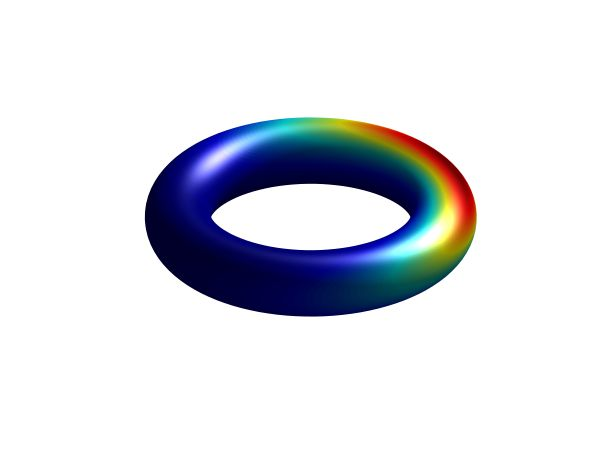

Code

libDirectional
libDirectional (Kurz et al., 2019) is a MATLAB library implementing most of my methods and a number of methods found in literature from the field of Directional Statistics. It is freely available on Github and licensed under the GPL v3.
https://github.com/libDirectional/libDirectional
Other Projects
- https://github.com/gerhardkurz/VideoFrameworkMATLAB
- a framework to create videos with MATLAB
- uses ffmpeg to encode the video
- https://github.com/gerhardkurz/MatlabUML
- a tool to automatically generate UML class diagrams from MATLAB code
- uses graphviz to generate the diagram
- https://github.com/gerhardkurz/FastEM
- an efficient implementation of the Expectation Maximization algorithm
- supports weighted samples
- provides a mex-file that can be called easily from MATLAB
- https://github.com/gerhardkurz/TransportAuctionMex
- auction algorithm for transport problems
- MATLAB-wrapper for the C++ implementation by J. D. Walsh
- https://github.com/gerhardkurz/TessellateS3
- tessellatation of unit sphere in 4D using tetrahedral/octahedral subdivision
- MATLAB-wrapper for the C implementation by Jared Glover in libBingham
References
- Kurz, G., Gilitschenski, I., Pfaff, F., Drude, L., Hanebeck, U., Haeb-Umbach, R., & Siegwart, R. (2019). Directional Statistics and Filtering Using libDirectional. Journal of Statistical Software, Articles, 89(4), 1–31. https://doi.org/10.18637/jss.v089.i04